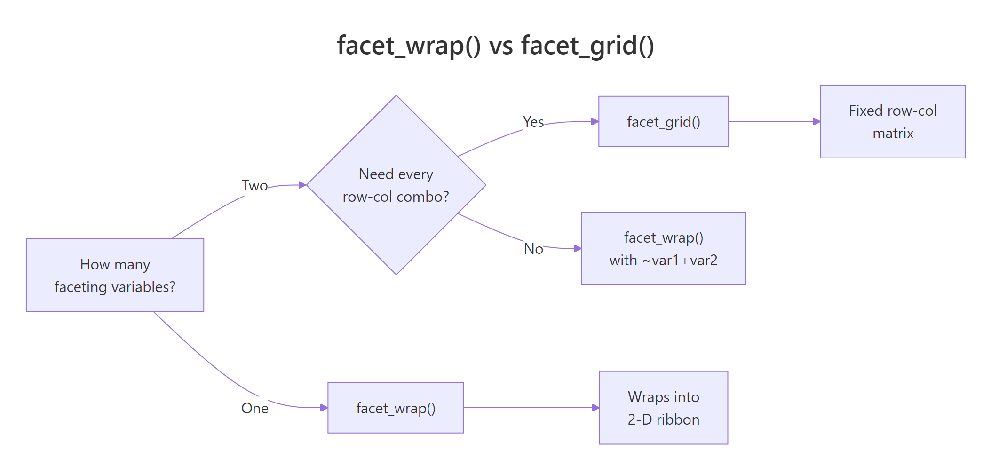
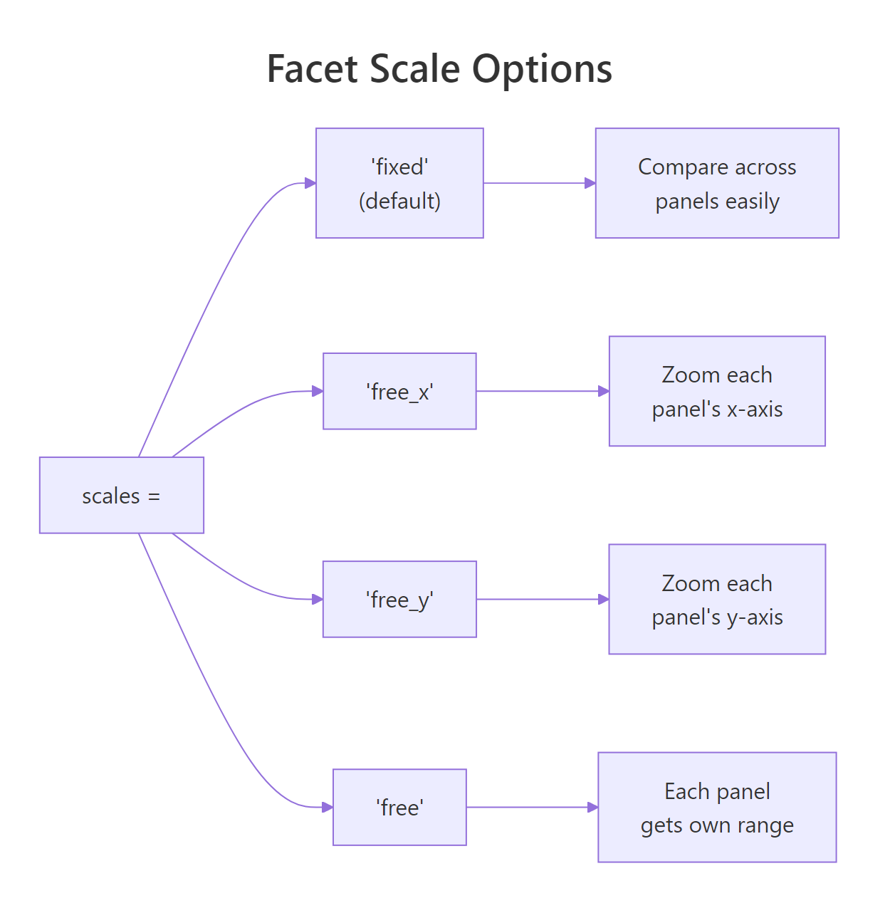
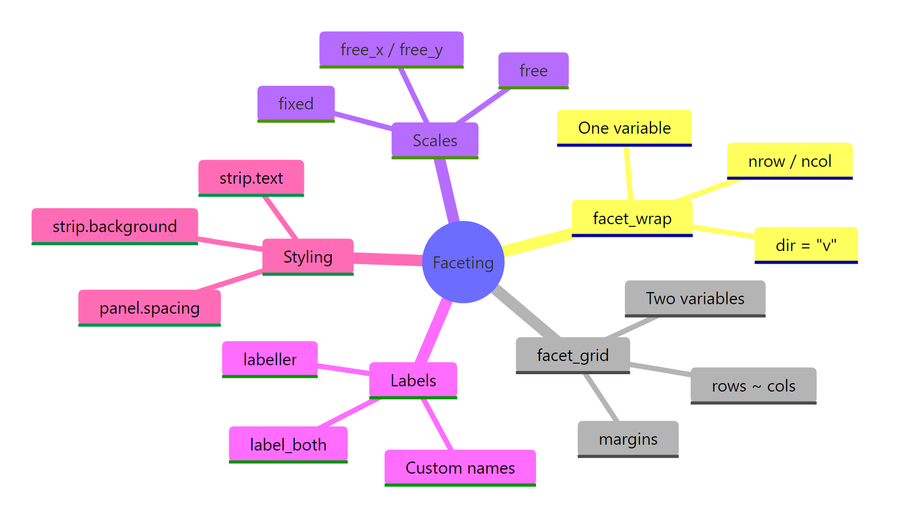

ggplot2 Facets: Create Multi-Panel Plots That Reveal Patterns Invisible Elsewhere
Faceting splits a single plot into a grid of smaller panels, one per group, so you can compare patterns across categories at a glance. ggplot2's facet_wrap() and facet_grid() make this effortless: one line of code turns a crowded, overlapping chart into a clear multi-panel display that reveals differences you'd never spot in a combined view.
How does faceting turn one plot into many?
When you plot multiple groups on one chart, colours and shapes start blending together. Faceting solves this by giving each group its own panel, same axes, same scale, but separate space. Let's see the difference immediately.
RFacet scatter by vehicle class
library(ggplot2)library(dplyr)# Scatter plot of highway mpg vs engine size, faceted by vehicle classggplot(mpg, aes(x = displ, y = hwy)) +geom_point(color ="steelblue", alpha =0.7) +facet_wrap(~class) +labs(title ="Highway MPG vs Engine Size by Vehicle Class", x ="Engine Displacement (L)", y ="Highway MPG") +theme_minimal()#> A 7-panel grid appears, one for each vehicle class.#> Compact and subcompact cars cluster at small engines + high mpg.#> SUVs and pickups spread across larger engines with lower mpg.#> 2seater (sports cars) stands out: large engines but decent highway mpg.
Without faceting, these seven groups would overlap into a single cloud of points. With faceting, each class gets breathing room, and the engine-size-to-efficiency relationship becomes crystal clear within each group.
Now let's facet the same data by drive type (drv), front-wheel, rear-wheel, or four-wheel drive.
RFacet scatter by drive type
# Facet by drive type insteadggplot(mpg, aes(x = displ, y = hwy)) +geom_point(color ="tomato", alpha =0.7) +facet_wrap(~drv) +labs(title ="Highway MPG vs Engine Size by Drive Type", x ="Engine Displacement (L)", y ="Highway MPG") +theme_minimal()#> Three panels: 4 (four-wheel), f (front-wheel), r (rear-wheel).#> Front-wheel drive dominates the small-engine, high-mpg space.#> Rear-wheel drive cars spread across larger engines.#> Four-wheel drive shows a tight negative slope.
Notice how the slope differs across drive types. Front-wheel cars have a wide efficiency range, while four-wheel drive vehicles show a tighter, steeper decline. These patterns are invisible when everything is layered on one chart.
Key Insight
Faceting reveals patterns that colour-coding hides. When groups overlap, colours blur into each other. Panels give each group visual separation, making slopes, clusters, and outliers jump out.
Try it: Facet the mpg scatter plot by year (1999 vs 2008) and compare whether fuel efficiency improved over the decade.
RExercise: Facet by year
# Try it: facet by yearggplot(mpg, aes(x = displ, y = hwy)) +geom_point(alpha =0.7) +facet_wrap(~year) +# your code heretheme_minimal()#> Expected: Two panels (1999 and 2008) showing similar distributions
Click to reveal solution
RFacet by year solution
ggplot(mpg, aes(x = displ, y = hwy)) +geom_point(color ="darkgreen", alpha =0.7) +facet_wrap(~year) +labs(title ="Highway MPG: 1999 vs 2008", x ="Engine Displacement (L)", y ="Highway MPG") +theme_minimal()#> The two panels look surprisingly similar, fuel efficiency#> didn't change dramatically between 1999 and 2008 in this dataset.
Explanation: The side-by-side comparison makes it easy to see that engine size and efficiency distributions barely shifted over the decade.
When should you use facet_wrap() vs facet_grid()?
These two functions solve different problems. facet_wrap() takes a single variable, creates one panel per level, and wraps them into a flexible grid, like text wrapping in a paragraph. facet_grid() takes two variables and creates a strict row-by-column matrix where every combination gets a cell.
Let's see facet_wrap() first with all seven vehicle classes.
Rfacetwrap ribbon layout
# facet_wrap: wraps panels into a flexible 2D ribbonggplot(mpg, aes(x = displ, y = hwy)) +geom_point(alpha =0.6) +facet_wrap(~class) +theme_minimal()#> 7 panels wrapped into a grid (3 rows x 3 cols, with 2 empty cells).#> ggplot2 picks the layout automatically.
Now compare with facet_grid(), which creates a structured matrix of drive type (rows) by cylinder count (columns).
Rfacetgrid matrix layout
# facet_grid: fixed row x column matrixggplot(mpg, aes(x = displ, y = hwy)) +geom_point(alpha =0.6) +facet_grid(drv ~ cyl) +theme_minimal()#> 3 rows (4, f, r) x 4 columns (4, 5, 6, 8 cylinders) = 12 cells.#> Some cells are empty (e.g., no rear-wheel 4-cylinder cars).#> The matrix structure makes two-way comparisons easy:#> read across a row to compare cylinders within a drive type,#> read down a column to compare drive types within a cylinder count.
The key difference: facet_grid() always shows every combination, even empty ones. This is useful when the matrix structure itself is informative (empty cells tell you something). facet_wrap() skips empty combos and packs panels efficiently.

Figure 1: Decision guide, when to use facet_wrap() vs facet_grid().
Tip
Start with facet_wrap(), it handles most cases. Switch to facet_grid() only when you have two variables and the row-column structure adds meaning. If you just want to see panels for each level of one variable, facet_wrap() is simpler and packs space better.
Try it: Compare facet_grid(. ~ drv) (drive type in columns) with facet_grid(drv ~ .) (drive type in rows). Which layout makes it easier to compare highway MPG across drive types?
RExercise: Columns versus rows arrangement
# Try it: rows vs columns in facet_gridggplot(mpg, aes(x = displ, y = hwy)) +geom_point(alpha =0.6) +# your code here: try facet_grid(. ~ drv) then facet_grid(drv ~ .)theme_minimal()#> Expected: Panels arranged as columns vs rows
Click to reveal solution
RColumns versus rows solution
# Drive type as columns (horizontal)ggplot(mpg, aes(x = displ, y = hwy)) +geom_point(alpha =0.6) +facet_grid(. ~ drv) +labs(title ="Drive type as columns") +theme_minimal()#> Three panels side by side, easy to compare y-axis (hwy) across groups.# Drive type as rows (vertical)ggplot(mpg, aes(x = displ, y = hwy)) +geom_point(alpha =0.6) +facet_grid(drv ~ .) +labs(title ="Drive type as rows") +theme_minimal()#> Three panels stacked, easy to compare x-axis (displ) across groups.
Explanation: Use . ~ var (columns) when you want to compare y-values across groups. Use var ~ . (rows) when you want to compare x-values. The dot . means "nothing" on that axis.
How do you control panel layout with nrow, ncol, and dir?
facet_wrap() lets you control exactly how panels are arranged. The ncol and nrow arguments set the grid dimensions, and dir controls whether panels fill horizontally (default) or vertically.
Let's force a two-column layout for the seven vehicle classes.
RTwo-column wrap layout
# Control layout with ncolggplot(mpg, aes(x = displ, y = hwy)) +geom_point(color ="steelblue", alpha =0.7) +facet_wrap(~class, ncol =2) +labs(title ="Two-column layout", x ="Engine Displacement (L)", y ="Highway MPG") +theme_minimal()#> 7 panels arranged in 2 columns x 4 rows (last row has 1 panel).#> Narrower panels, good when your x-axis doesn't need much width.
By default, panels fill left-to-right, then wrap to the next row. Setting dir = "v" fills top-to-bottom instead, like reading a newspaper column.
RVertical wrapping direction
# Vertical wrapping directionggplot(mpg, aes(x = displ, y = hwy)) +geom_point(color ="coral", alpha =0.7) +facet_wrap(~class, ncol =3, dir ="v") +labs(title ="Vertical wrapping (dir = 'v')") +theme_minimal()#> Panels fill top-to-bottom, then move to the next column.#> Order: 2seater, compact, midsize (col 1),#> minivan, pickup, subcompact (col 2), suv (col 3).
Tip
Use ncol = 2 or ncol = 3 for narrow panels when your x-axis has many values or long labels. Use nrow = 1 for a single horizontal strip that maximises each panel's width, great for time series.
Try it: Arrange the seven class facets in a single row using nrow = 1. Notice how it changes the aspect ratio and readability.
RExercise: Single-row facet strip
# Try it: single-row layoutggplot(mpg, aes(x = displ, y = hwy)) +geom_point(alpha =0.7) +facet_wrap(~class, nrow =1) +# your code heretheme_minimal()#> Expected: 7 panels in one horizontal strip
Click to reveal solution
RSingle-row strip solution
ggplot(mpg, aes(x = displ, y = hwy)) +geom_point(color ="purple", alpha =0.7) +facet_wrap(~class, nrow =1) +labs(title ="Single-row layout: all classes side by side") +theme_minimal()#> 7 very narrow panels in one row.#> Hard to read individual points, but great for spotting#> overall pattern differences at a glance.
Explanation:nrow = 1 creates a filmstrip layout. It works best with fewer panels (3-4) or when you want a quick visual comparison without details.
When should you free the scales, and when shouldn't you?
By default, every panel shares the same axis range (scales = "fixed"). This makes cross-panel comparison easy because a point at the same position means the same value everywhere. But when groups have wildly different ranges, some panels get squashed into a tiny corner while others spread out.
The scales argument has four options: "fixed" (default), "free_x", "free_y", and "free". Let's see the difference with economic indicators that have very different magnitudes.
RFree y-scales for economic indicators
# Free y-scales for different economic indicatorsggplot(economics_long, aes(x = date, y = value)) +geom_line(color ="steelblue") +facet_wrap(~variable, scales ="free_y", ncol =1) +labs(title ="US Economic Indicators (free y-scales)", x ="Year", y ="") +theme_minimal()#> 5 panels stacked vertically, each with its own y-axis range.#> pce (personal consumption) goes up to ~12,000.#> unemploy stays under 16,000.#> psavert (savings rate) ranges 0-17%.#> Without free_y, the savings rate panel would be a flat line.
Each indicator now fills its own panel. Without scales = "free_y", personal savings rate (0-17%) would be an invisible flat line next to personal consumption expenditures (0-12,000).
Now let's compare fixed vs free directly on the same data.
RFixed versus free scale histograms
# Side-by-side: fixed vs free scalesp_fixed <-ggplot(mpg, aes(x = hwy)) +geom_histogram(bins =15, fill ="steelblue", alpha =0.7) +facet_wrap(~drv, scales ="fixed") +labs(title ="Fixed scales (default)") +theme_minimal()p_free <-ggplot(mpg, aes(x = hwy)) +geom_histogram(bins =15, fill ="tomato", alpha =0.7) +facet_wrap(~drv, scales ="free") +labs(title ="Free scales") +theme_minimal()p_fixed#> All three panels share the same x and y ranges.#> Front-wheel (f) has the most data, tall bars dominate.#> Rear-wheel (r) has few observations, short bars.p_free#> Each panel zooms to fit its own data.#> Rear-wheel's distribution shape is now visible.#> But you can't directly compare bar heights across panels.
The trade-off is clear: fixed scales let you compare across panels (a bar at the same height means the same count), while free scales let you see patterns within each panel.

Figure 2: The four scale options and when to use each.
Warning
Free scales make cross-panel comparison harder. Use them when panels have genuinely different ranges (population vs percentage, revenue vs count). Don't use them just to "zoom in", readers will assume same-position means same-value unless you warn them.
Try it: Plot the airquality dataset's Ozone values faceted by Month using scales = "free_y". Which month shows the most variability?
RExercise: Airquality with free scales
# Try it: airquality faceted by monthex_aq <- airquality |>filter(!is.na(Ozone))ggplot(ex_aq, aes(x = Day, y = Ozone)) +geom_point() +# your code here: add facet_wrap with free_ytheme_minimal()#> Expected: 5 panels (May-Sep), each with its own y-range
Click to reveal solution
RAirquality free scales solution
ex_aq <- airquality |>filter(!is.na(Ozone))ggplot(ex_aq, aes(x = Day, y = Ozone)) +geom_point(color ="darkgreen") +geom_line(alpha =0.3) +facet_wrap(~Month, scales ="free_y") +labs(title ="Daily Ozone by Month (free y-scales)", x ="Day of Month", y ="Ozone (ppb)") +theme_minimal()#> Month 7 (July) and 8 (August) show the widest ozone ranges#> and highest peaks, consistent with summer smog patterns.
Explanation: Free y-scales let you see each month's internal pattern clearly. July and August have much higher ozone variability than May or September.
How do you customize strip labels and appearance?
Strip labels are the grey text bars at the top of each panel. By default, they show the raw data value (like "4", "f", or "suv"). That's often cryptic, readers shouldn't need to decode abbreviations. The labeller argument and theme() elements let you fix this.
The simplest upgrade is label_both, which shows both the variable name and its value.
Rlabelboth for strip clarity
# label_both: show variable name + valueggplot(mpg, aes(x = displ, y = hwy)) +geom_point(alpha =0.6) +facet_wrap(~cyl, labeller = label_both) +labs(title ="Cylinders with label_both") +theme_minimal()#> Strips now read "cyl: 4", "cyl: 6", "cyl: 8"#> instead of just "4", "6", "8".#> Much clearer what the panels represent.
For full control, pass a named vector to as_labeller() to map data values to human-readable labels.
RCustom labeller for cylinders
# Custom labels with as_labellercyl_labels <-as_labeller(c("4"="4 Cylinders","5"="5 Cylinders","6"="6 Cylinders","8"="8 Cylinders"))ggplot(mpg, aes(x = displ, y = hwy)) +geom_point(color ="steelblue", alpha =0.7) +facet_wrap(~cyl, labeller = cyl_labels) +labs(title ="Custom cylinder labels") +theme_minimal()#> Strips now read "4 Cylinders", "6 Cylinders", "8 Cylinders".#> Publication-ready without any post-processing.
You can also style the strip text and background using theme(). This is where you control font size, colour, and the strip bar's fill colour.
RStyled strip text and background
# Theme customization for stripsggplot(mpg, aes(x = displ, y = hwy)) +geom_point(alpha =0.6) +facet_wrap(~class) +labs(title ="Styled strip labels") +theme_minimal() +theme( strip.text =element_text(face ="bold", size =11, color ="white"), strip.background =element_rect(fill ="steelblue", color =NA), panel.spacing =unit(1, "lines") )#> Bold white text on blue strip backgrounds.#> panel.spacing adds breathing room between panels.#> This looks much more polished than the default grey strips.
Note
Strip labels from raw data are often cryptic abbreviations. Always relabel for publication. Readers shouldn't need to guess that "f" means "Front-Wheel Drive" or that "4" means "4 Cylinders". A few minutes of labelling saves your audience confusion.
Try it: Create custom strip labels that rename the drv values from "f", "r", and "4" to "Front-Wheel", "Rear-Wheel", and "4WD".
ex_drv_labels <-as_labeller(c("4"="4WD","f"="Front-Wheel","r"="Rear-Wheel"))ggplot(mpg, aes(x = displ, y = hwy)) +geom_point(color ="coral", alpha =0.7) +facet_wrap(~drv, labeller = ex_drv_labels) +labs(title ="Drive Types with Custom Labels") +theme_minimal()#> Strips now show human-readable drive type names.
Explanation:as_labeller() takes a named character vector where names are the data values and values are the display labels. Every level must be mapped.
How do you combine faceting with other ggplot2 layers?
Faceting works with every geom and layer in ggplot2. You can add trend lines, reference lines, annotations, anything. One particularly powerful technique is overlaying background context data: show all data points faintly behind each panel's highlighted subset.
Let's start by adding trend lines to each faceted panel.
RTrend lines per drive panel
# Faceted scatter + trend lines per panelggplot(mpg, aes(x = displ, y = hwy)) +geom_point(alpha =0.5) +geom_smooth(method ="lm", se =FALSE, color ="tomato", linewidth =1) +facet_wrap(~drv) +labs(title ="Trend lines per drive type", x ="Engine Displacement (L)", y ="Highway MPG") +theme_minimal()#> Each panel gets its own linear trend line.#> Front-wheel (f): gentle negative slope.#> Four-wheel (4): steeper decline, bigger engines hurt mpg more.#> Rear-wheel (r): moderate slope but wider spread.
Each panel gets its own trend line fit to that panel's data. This makes it easy to compare slopes, you can immediately see that four-wheel drive vehicles lose more highway MPG per litre of engine displacement than front-wheel drive cars.
Now let's use the background data technique. The idea: in each panel, show all data points in light grey, then overlay the current group's points in colour. This gives context, you see how each group sits within the overall distribution.
RBackground context scatter technique
# Background data techniquempg_bg <- mpg |>select(-class)ggplot(mpg, aes(x = displ, y = hwy)) +geom_point(data = mpg_bg, color ="grey80", alpha =0.4) +geom_point(color ="steelblue", alpha =0.8) +facet_wrap(~class) +labs(title ="Each class highlighted against all vehicles", x ="Engine Displacement (L)", y ="Highway MPG") +theme_minimal()#> Grey dots = all vehicles. Blue dots = current class.#> Compact cars cluster in the top-left (small engine, high mpg).#> SUVs sit in the bottom-right (large engine, low mpg).#> 2seater sports cars stand apart: large engines but decent mpg.
The trick is simple: create a copy of the data without the faceting variable (select(-class)), then plot it as a background layer. Since the background data has no class column, it appears in every panel.
Key Insight
Background data gives each panel context. You see not just the group's pattern, but how it compares to the overall distribution. This is one of the most powerful faceting techniques for storytelling with data.
Try it: Add a horizontal dashed line at the overall mean hwy value to every panel using geom_hline().
RExercise: Overall mean reference line
# Try it: add overall mean reference lineex_mean_hwy <-mean(mpg$hwy)ggplot(mpg, aes(x = displ, y = hwy)) +geom_point(alpha =0.7) +# your code here: add geom_hline with ex_mean_hwyfacet_wrap(~class) +theme_minimal()#> Expected: A horizontal dashed line at ~23.4 mpg in every panel
Click to reveal solution
ROverall mean reference solution
ex_mean_hwy <-mean(mpg$hwy)ggplot(mpg, aes(x = displ, y = hwy)) +geom_point(color ="steelblue", alpha =0.7) +geom_hline(yintercept = ex_mean_hwy, linetype ="dashed", color ="tomato", linewidth =0.8) +facet_wrap(~class) +labs(title ="Each class vs overall average highway MPG") +theme_minimal()#> The dashed red line sits at ~23.4 mpg.#> Compact and subcompact cars are mostly above the line.#> Pickups and SUVs are mostly below.
Explanation:geom_hline() draws the same line in every panel because it doesn't depend on the faceting variable. It's a simple way to add a benchmark for comparison.
What are margins in facet_grid() and how do they work?
facet_grid() has a unique feature: margins. Setting margins = TRUE adds summary panels that combine all levels of a variable, like "Total" rows and columns in a pivot table. These extra panels show the overall pattern alongside the group-specific panels.
Rfacetgrid with full margins
# facet_grid with marginsggplot(mpg, aes(x = displ, y = hwy)) +geom_point(alpha =0.5) +geom_smooth(method ="lm", se =FALSE, color ="tomato") +facet_grid(drv ~ cyl, margins =TRUE) +labs(title ="Drive type × Cylinders with margins", x ="Engine Displacement (L)", y ="Highway MPG") +theme_minimal()#> The regular 3x4 grid plus an "(all)" row and "(all)" column.#> Bottom row: all drive types combined for each cylinder count.#> Right column: all cylinder counts combined for each drive type.#> Bottom-right cell: everything combined (the overall pattern).
The margin panels are labelled "(all)" by default. The bottom-right cell shows the entire dataset, the grand total. Each margin row or column aggregates across the dimension it represents.
Tip
Margins are ideal for dashboards. Each group panel sits next to its "overall" panel, making deviations jump out visually. You can also add margins for just one variable by passing its name: margins = "drv" adds only drive-type totals.
Try it: Add margins for only the drv variable (margins = "drv") and compare the output to full margins = TRUE.
RExercise: Partial margins on drive
# Try it: partial marginsggplot(mpg, aes(x = displ, y = hwy)) +geom_point(alpha =0.5) +facet_grid(drv ~ cyl, margins ="drv") +# your code heretheme_minimal()#> Expected: An "(all)" row at the bottom, but no "(all)" column
Click to reveal solution
RPartial margins solution
ggplot(mpg, aes(x = displ, y = hwy)) +geom_point(alpha =0.5) +geom_smooth(method ="lm", se =FALSE, color ="steelblue") +facet_grid(drv ~ cyl, margins ="drv") +labs(title ="Margins for drive type only") +theme_minimal()#> An "(all)" row appears at the bottom, one summary panel per cylinder count.#> No "(all)" column, because margins only apply to drv.#> Compare: margins = TRUE would add both row and column totals.
Explanation: Passing a variable name to margins adds summary panels for only that variable. This keeps the grid manageable when you only need one dimension of totals.
Practice Exercises
Exercise 1: Faceted bar chart with custom labels
Create a faceted bar chart showing the average highway MPG by manufacturer, faceted by drive type (drv). Use scales = "free_y", custom strip labels ("Front-Wheel", "Rear-Wheel", "4WD"), and coord_flip() for readability.
RExercise: Faceted bar chart
# Exercise 1: Faceted bar chart# Hint: group_by(drv, manufacturer), summarise(mean_hwy = mean(hwy)),# then ggplot with geom_col + facet_wrap + coord_flip# Write your code below:
Click to reveal solution
RFaceted bar chart solution
my_drv_labels <-as_labeller(c("4"="4WD", "f"="Front-Wheel", "r"="Rear-Wheel"))my_summary <- mpg |>group_by(drv, manufacturer) |>summarise(mean_hwy =mean(hwy), .groups ="drop")ggplot(my_summary, aes(x =reorder(manufacturer, mean_hwy), y = mean_hwy)) +geom_col(fill ="steelblue", alpha =0.8) +facet_wrap(~drv, scales ="free_y", labeller = my_drv_labels) +coord_flip() +labs(title ="Average Highway MPG by Manufacturer and Drive Type", x ="", y ="Mean Highway MPG") +theme_minimal()#> Three panels with manufacturer bars sorted by efficiency.#> Front-wheel: Honda and Volkswagen lead.#> 4WD: Subaru stands out with decent mpg.#> Rear-wheel: Pontiac and Mercedes appear here.
Explanation:reorder() sorts manufacturers by MPG within each panel, coord_flip() turns bars horizontal for readable labels, and scales = "free_y" lets each panel show only its manufacturers.
Exercise 2: Small multiples time series
Build a "small multiples" display of the economics_long dataset. Each economic indicator gets its own panel with free y-scales, a loess trend line, custom strip labels, bold white text on dark strip backgrounds, and a clean theme.
RExercise: Time series small multiples
# Exercise 2: Polished time series small multiples# Hint: geom_line + geom_smooth(method = "loess") + facet_wrap(scales = "free_y")# Use theme() for strip styling, as_labeller for custom names.# Write your code below:
Click to reveal solution
RTime series small multiples solution
my_econ_labels <-as_labeller(c("pce"="Personal Consumption","pop"="Population","psavert"="Savings Rate (%)","uempmed"="Median Unemployment (weeks)","unemploy"="Total Unemployed"))ggplot(economics_long, aes(x = date, y = value)) +geom_line(color ="grey50", linewidth =0.5) +geom_smooth(method ="loess", se =FALSE, color ="tomato", linewidth =1, span =0.3) +facet_wrap(~variable, scales ="free_y", ncol =1, labeller = my_econ_labels) +labs(title ="US Economic Indicators (1967-2015)", x ="", y ="") +theme_minimal() +theme( strip.text =element_text(face ="bold", size =11, color ="white"), strip.background =element_rect(fill ="#2c3e50", color =NA), panel.spacing =unit(0.8, "lines") )#> Five stacked panels with descriptive labels.#> Loess trends highlight long-term patterns:#> consumption and population rise steadily,#> savings rate declines, unemployment spikes during recessions.
Explanation:ncol = 1 stacks panels vertically for time series, span = 0.3 in loess gives a responsive trend line, and the dark strip backgrounds create a professional dashboard look.
Exercise 3: Background data with diamonds
For the diamonds dataset, create a faceted scatter plot by cut. Show all diamonds as a grey background layer, the current cut's diamonds in colour, and add a geom_smooth() trend line per panel. Use a sample of 2,000 diamonds for performance.
RExercise: Background data with diamonds
# Exercise 3: Background data with diamonds# Hint: sample_n(2000), create background df without 'cut',# layer grey points first, coloured points second, then geom_smooth# Write your code below:
Click to reveal solution
RDiamonds background solution
set.seed(123)my_diamonds <- diamonds |>sample_n(2000)my_dia_bg <- my_diamonds |>select(-cut)ggplot(my_diamonds, aes(x = carat, y = price)) +geom_point(data = my_dia_bg, color ="grey85", alpha =0.3, size =0.8) +geom_point(aes(color = cut), alpha =0.6, size =1) +geom_smooth(method ="lm", se =FALSE, color ="black", linewidth =0.8) +facet_wrap(~cut) +scale_color_brewer(palette ="Set2") +labs(title ="Diamond Price vs Carat by Cut Quality", x ="Carat", y ="Price ($)") +theme_minimal() +theme(legend.position ="none")#> Each panel highlights one cut quality against all diamonds.#> Ideal and Premium cuts show similar price-carat slopes.#> Fair cut diamonds cluster at higher carats, larger but less refined.
Explanation: Removing the faceting variable (cut) from the background data makes those points appear in every panel. The coloured points and trend line are specific to each cut.
Putting It All Together
Let's build a polished, publication-ready faceted visualization from scratch. We'll combine everything, custom labels, trend lines, styled strips, and a clean theme, into one complete workflow.
REnd-to-end polished faceted plot
# Complete example: polished faceted analysis of mpgdrv_labels <-as_labeller(c("4"="4-Wheel Drive","f"="Front-Wheel Drive","r"="Rear-Wheel Drive"))mpg_background <- mpg |>select(-drv)p_final <-ggplot(mpg, aes(x = displ, y = hwy)) +# Background: all data in greygeom_point(data = mpg_background, color ="grey85", alpha =0.4, size =1.5) +# Foreground: current drive typegeom_point(aes(color =factor(cyl)), alpha =0.8, size =2) +# Trend line per panelgeom_smooth(method ="lm", se =TRUE, color ="black", fill ="grey90", linewidth =0.8) +# Reference line: overall meangeom_hline(yintercept =mean(mpg$hwy), linetype ="dashed", color ="tomato", linewidth =0.6) +# Facet by drive type with custom labelsfacet_wrap(~drv, labeller = drv_labels) +# Colour scale for cylindersscale_color_brewer(palette ="Set2", name ="Cylinders") +# Labelslabs( title ="Highway Fuel Efficiency by Drive Type", subtitle ="Background shows all vehicles; dashed line = overall mean (23.4 mpg)", x ="Engine Displacement (litres)", y ="Highway MPG", caption ="Source: EPA fuel economy data (mpg dataset)" ) +# Themetheme_minimal(base_size =12) +theme( strip.text =element_text(face ="bold", size =12), strip.background =element_rect(fill ="grey95", color =NA), panel.spacing =unit(1.2, "lines"), legend.position ="bottom", plot.title =element_text(face ="bold"), plot.subtitle =element_text(color ="grey40", size =10) )p_final#> Three polished panels with:#> - Grey background dots showing all vehicles for context#> - Coloured dots by cylinder count#> - Linear trend with confidence band#> - Dashed red reference line at the overall mean#> - Clean strip labels reading "4-Wheel Drive", etc.#>#> Key findings:#> Front-wheel: widest range, many small-engine efficient cars.#> Rear-wheel: mostly 6-8 cylinders, below average mpg.#> 4-wheel: steepest decline, engine size hurts mpg most here.
This single plot tells a complete story. The background data provides context, the colour encoding adds a dimension (cylinders), the trend lines quantify relationships, and the reference line anchors everything to the fleet average.
Summary
Function
Best For
Key Arguments
facet_wrap(~var)
One variable, flexible layout
ncol, nrow, scales, dir, labeller
facet_grid(row ~ col)
Two variables, structured matrix
scales, space, margins, labeller
scales = "fixed"
Cross-panel comparison
Default, same axes everywhere
scales = "free"
Within-panel detail
"free_x", "free_y", or "free" for both
as_labeller(c(...))
Custom strip labels
Named vector mapping data values to display text
label_both
Show variable name + value
Strips read "cyl: 4" instead of just "4"
margins = TRUE
Summary panels in grid
Adds "(all)" rows/columns like pivot table totals
Background data trick
Context per panel
Remove faceting variable from background layer
Key takeaways:
Start with facet_wrap() for most faceting needs, it's simpler and packs space better
Use facet_grid() when the row-column matrix structure adds analytical value
Keep scales fixed for comparison; free them only when ranges genuinely differ
Always relabel strips for publication, raw data values are rarely reader-friendly
Layer background data for context, it's the most powerful faceting technique for storytelling

Figure 3: ggplot2 faceting concepts at a glance.
References
Wickham, H., ggplot2: Elegant Graphics for Data Analysis, 3rd Edition. Chapter 16: Faceting. Link
ggplot2 reference, facet_wrap() documentation. Link
ggplot2 reference, facet_grid() documentation. Link
Tufte, E., The Visual Display of Quantitative Information. Graphics Press (2001). Chapter on Small Multiples.
Wickham, H. & Grolemund, G., R for Data Science, 2nd Edition. Chapter 2: Data Visualization. Link